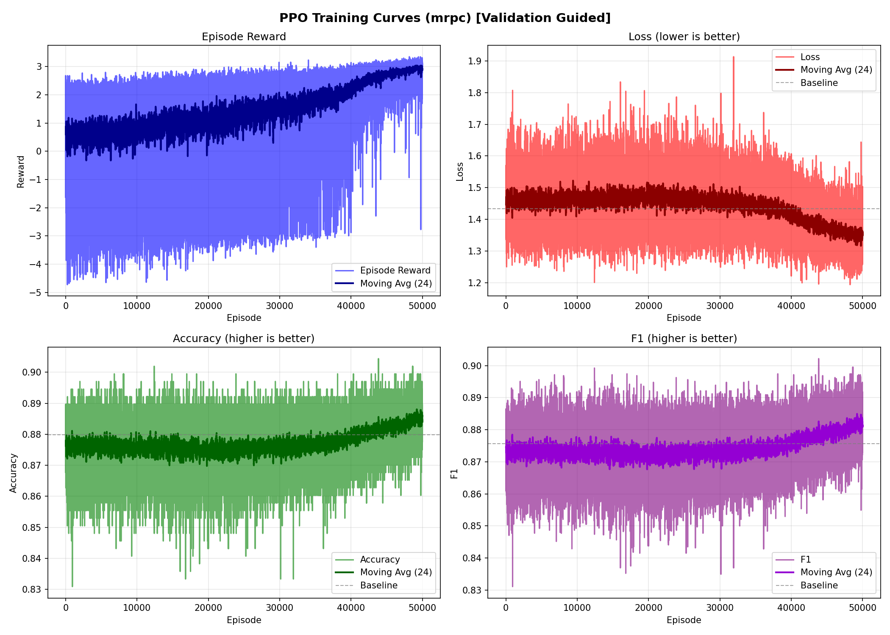
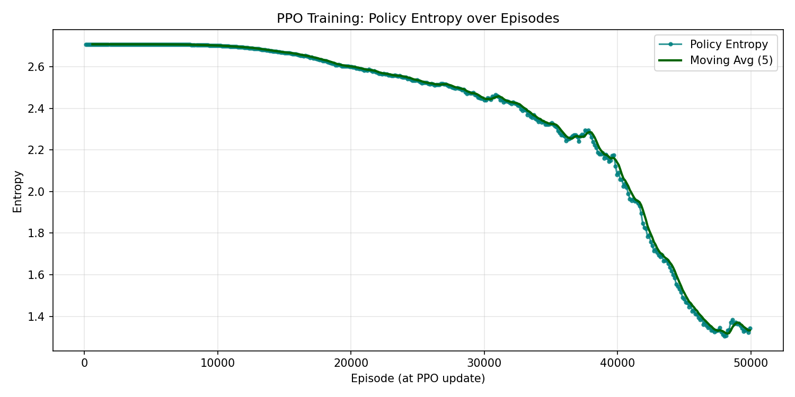

Stage-1 Full RL Final Report: BERT-large MRPC
Run directory: experiments/server_command_runs/stage1_full_50000_large_mrpc_20260527_194810
Created: 2026-05-29T00:28:02.755811+08:00 · server head during training/final-eval: cdcc42b · protocol: validation_full only · selection: raw_reward_best
Result
Completed episodes50000
Best reward3.3509
Best cost67.00
Constraint statusPASS
| Item | Loss | Accuracy | F1 | Cost | Reward | Constraints |
|---|---|---|---|---|---|---|
| Pure original baseline | 1.434271 | 0.879902 | 0.875655 | original | n/a | reference |
| Raw PPO reward-best | 1.252213 | 0.897059 | 0.895091 | 67.00 | 3.350895 | yes |
| Delta vs baseline | -0.182058 (-12.693%) | 0.017157 (+1.950%) | 0.019436 (+2.220%) |
Constraint limits: loss <= 1.441442, accuracy >= 0.875502, F1 >= 0.871276. The baseline is pure original plaintext GELU/Softmax represented by degree -1 for every BERT-large layer.
Selected Config
| GELU | [1, 1, 2, 1, 1, 1, 1, 1, 1, 1, 2, 2, 1, 1, 1, 1, 1, 1, 1, 1, 1, 1, 1, 1] |
| Softmax | [2, 3, 3, 2, 3, 3, 6, 5, 2, 5, 3, 6, 3, 3, 2, 2, 3, 2, 3, 5, 3, 2, 3, 3] |
| GELU cost | 28.50 |
| Softmax cost | 38.50 |
| Raw PPO reward-best source | stage1/stage1_rl_checkpoint.pt::best_config |
Learning Curves


| Series | N | Min | Max | Mean | P50 | P95 | P99 | Last | Last500 mean | Last1000 mean |
|---|---|---|---|---|---|---|---|---|---|---|
| Reward | 50000 | -4.725964 | 3.350895 | 1.464791 | 1.714391 | 2.976312 | 3.124527 | 3.090021 | 2.915935 | 2.927369 |
| Loss | 50000 | 1.193964 | 1.913352 | 1.442282 | 1.441120 | 1.568794 | 1.626434 | 1.336279 | 1.347523 | 1.345744 |
| Metric1 Accuracy | 50000 | 0.830882 | 0.904412 | 0.877202 | 0.877451 | 0.889706 | 0.892157 | 0.884804 | 0.885088 | 0.885147 |
| Metric2 F1 | 50000 | 0.831057 | 0.902186 | 0.874282 | 0.874422 | 0.885447 | 0.889491 | 0.882444 | 0.881737 | 0.881835 |
| Entropy | 416 | 1.304772 | 2.708001 | 2.358838 | 2.532263 | 2.707989 | 2.707999 | 1.343491 | n/a | n/a |
Four-GPU Evidence
Rollout windows417
Mean speedup3.92x
Speedup range3.83x-3.99x
Last speedup3.89x
| Window | Episodes/worker | Counts | Wall seconds | Speedup |
|---|---|---|---|---|
| 412 | 30 | [30, 30, 30, 30] | 219.935 | 3.85x |
| 413 | 30 | [30, 30, 30, 30] | 207.847 | 3.90x |
| 414 | 30 | [30, 30, 30, 30] | 214.579 | 3.88x |
| 415 | 30 | [30, 30, 30, 30] | 208.718 | 3.88x |
| 416 | 20 | [20, 20, 20, 20] | 142.001 | 3.89x |
Artifacts
| HTML report | experiments/server_command_runs/stage1_full_50000_large_mrpc_20260527_194810/stage1_large_mrpc_final_report.html |
| Compact summary JSON | experiments/server_command_runs/stage1_full_50000_large_mrpc_20260527_194810/stage1_large_mrpc_final_summary.json |
| Final eval JSON | experiments/server_command_runs/stage1_full_50000_large_mrpc_20260527_194810/stage1/final_eval_best_vs_baseline.json |
| Training health JSON | experiments/server_command_runs/stage1_full_50000_large_mrpc_20260527_194810/stage1/large_mrpc_training_health.json |
| Training log tail | experiments/server_command_runs/stage1_full_50000_large_mrpc_20260527_194810/stage1/stage1_full_large_mrpc_log_tail.txt |